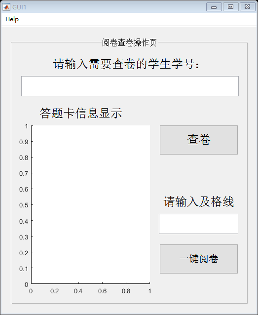

function varargout = GUI1(varargin) % GUI1 MATLAB code for GUI1.fig % GUI1, by itself, creates a new GUI1 or raises the existing % singleton*. % % H = GUI1 returns the handle to a new GUI1 or the handle to % the existing singleton*. % % GUI1('CALLBACK',hObject,eventData,handles,...) calls the local % function named CALLBACK in GUI1.M with the given input arguments. % % GUI1('Property','Value',...) creates a new GUI1 or raises the % existing singleton*. Starting from the left, property value pairs are % applied to the GUI before GUI1_OpeningFcn gets called. An % unrecognized property name or invalid value makes property application % stop. All inputs are passed to GUI1_OpeningFcn via varargin. % % *See GUI Options on GUIDE's Tools menu. Choose "GUI allows only one % instance to run (singleton)". % % See also: GUIDE, GUIDATA, GUIHANDLES % Edit the above text to modify the response to help GUI1 % Last Modified by GUIDE v2.5 11-Apr-2017 16:37:22 % Begin initialization code - DO NOT EDIT gui_Singleton = 1; gui_State = struct('gui_Name', mfilename, ... 'gui_Singleton', gui_Singleton, ... 'gui_OpeningFcn', @GUI1_OpeningFcn, ... 'gui_OutputFcn', @GUI1_OutputFcn, ... 'gui_LayoutFcn', [] , ... 'gui_Callback', []); if nargin && ischar(varargin{1}) gui_State.gui_Callback = str2func(varargin{1}); end if nargout [varargout{1:nargout}] = gui_mainfcn(gui_State, varargin{:}); else gui_mainfcn(gui_State, varargin{:}); end % End initialization code - DO NOT EDIT % --- Executes just before GUI1 is made visible. function GUI1_OpeningFcn(hObject, eventdata, handles, varargin) % This function has no output args, see OutputFcn. % hObject handle to figure % eventdata reserved - to be defined in a future version of MATLAB % handles structure with handles and user data (see GUIDATA) % varargin command line arguments to GUI1 (see VARARGIN) % Choose default command line output for GUI1 handles.output = hObject; % Update handles structure guidata(hObject, handles); % UIWAIT makes GUI1 wait for user response (see UIRESUME) % uiwait(handles.figure1); % --- Outputs from this function are returned to the command line. function varargout = GUI1_OutputFcn(hObject, eventdata, handles) % varargout cell array for returning output args (see VARARGOUT); % hObject handle to figure % eventdata reserved - to be defined in a future version of MATLAB % handles structure with handles and user data (see GUIDATA) % Get default command line output from handles structure varargout{1} = handles.output; function edit1_Callback(hObject, eventdata, handles) % hObject handle to edit1 (see GCBO) % eventdata reserved - to be defined in a future version of MATLAB % handles structure with handles and user data (see GUIDATA) % Hints: get(hObject,'String') returns contents of edit1 as text % str2double(get(hObject,'String')) returns contents of edit1 as a double % --- Executes during object creation, after setting all properties. function edit1_CreateFcn(hObject, eventdata, handles) % hObject handle to edit1 (see GCBO) % eventdata reserved - to be defined in a future version of MATLAB % handles empty - handles not created until after all CreateFcns called % Hint: edit controls usually have a white background on Windows. % See ISPC and COMPUTER. if ispc && isequal(get(hObject,'BackgroundColor'), get(0,'defaultUicontrolBackgroundColor')) set(hObject,'BackgroundColor','white'); end % --- Executes on button press in pushbutton1. function pushbutton1_Callback(hObject, eventdata, handles) % hObject handle to pushbutton1 (see GCBO) % eventdata reserved - to be defined in a future version of MATLAB % handles structure with handles and user data (see GUIDATA) CustomNo = get(handles.edit1,'String');%需查询的学号 CustomNo = sprintf('%s.png',CustomNo); %---------------------------读取result文件夹----------------------------- dir_struct_search = dir('results'); [sort_names_search,sort_index_search] = sortrows({dir_struct_search.name}); handles.file_name_search = sort_names_search; handles.is_dir_search = [dir_struct_search.isdir];%判断是否为目录 for i = 1:length(handles.is_dir_search) if ~handles.is_dir_search(i) handles.filenames_search{i} = handles.file_name_search{i}; end end %去除handles.filenames（含有文件夹中所有文件名）中的空元素 handles.filenames_search(cellfun(@isempty,handles.filenames_search))=[]; %----------------------------------------------------------------------- for i2 = 1 : length(handles.filenames_search) if strcmp(CustomNo , handles.filenames_search{i2}) axes(handles.axes1); imshow(sprintf('results\\%s',CustomNo)); break; end if i2 == length(handles.filenames_search) msgbox('无此答题卡', '错误提示','error'); end end % --- Executes on button press in pushbutton2. function pushbutton2_Callback(hObject, eventdata, handles) % hObject handle to pushbutton2 (see GCBO) % eventdata reserved - to be defined in a future version of MATLAB % handles structure with handles and user data (see GUIDATA) Custom_pass_scores = str2double(get(handles.edit2,'String')); %flod_name = uigetdir; dir_struct = dir('images'); [sort_names,sort_index] = sortrows({dir_struct.name}); handles.file_name = sort_names; handles.is_dir = [dir_struct.isdir];%判断是否为目录 for i = 1:length(handles.is_dir) if ~handles.is_dir(i) handles.filenames{i} = handles.file_name{i}; end end %去除handles.filenames中的空元素 handles.filenames(cellfun(@isempty,handles.filenames))=[]; Paper_Inspection( handles.filenames,Custom_pass_scores ); function edit2_Callback(hObject, eventdata, handles) % hObject handle to edit2 (see GCBO) % eventdata reserved - to be defined in a future version of MATLAB % handles structure with handles and user data (see GUIDATA) % Hints: get(hObject,'String') returns contents of edit2 as text % str2double(get(hObject,'String')) returns contents of edit2 as a double % --- Executes during object creation, after setting all properties. function edit2_CreateFcn(hObject, eventdata, handles) % hObject handle to edit2 (see GCBO) % eventdata reserved - to be defined in a future version of MATLAB % handles empty - handles not created until after all CreateFcns called % Hint: edit controls usually have a white background on Windows. % See ISPC and COMPUTER. if ispc && isequal(get(hObject,'BackgroundColor'), get(0,'defaultUicontrolBackgroundColor')) set(hObject,'BackgroundColor','white'); end % -------------------------------------------------------------------- function Help_Callback(hObject, eventdata, handles) % hObject handle to Help (see GCBO) % eventdata reserved - to be defined in a future version of MATLAB % handles structure with handles and user data (see GUIDATA) msgbox(fileread('Readme.txt'), 'System Information','help');